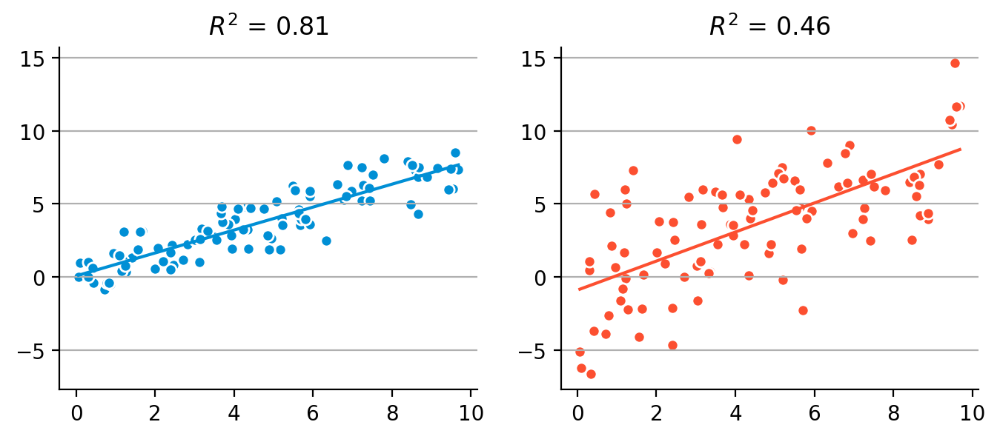
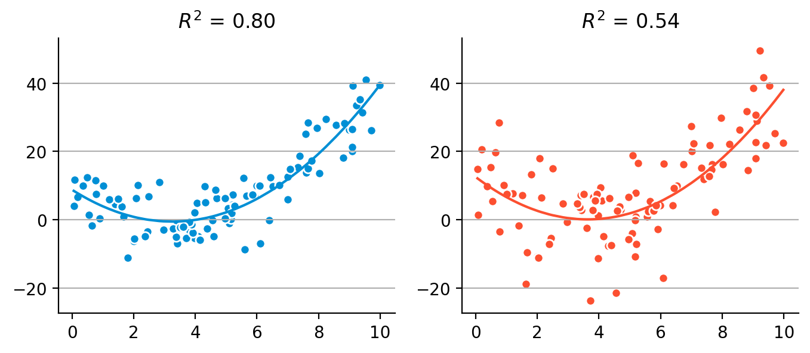
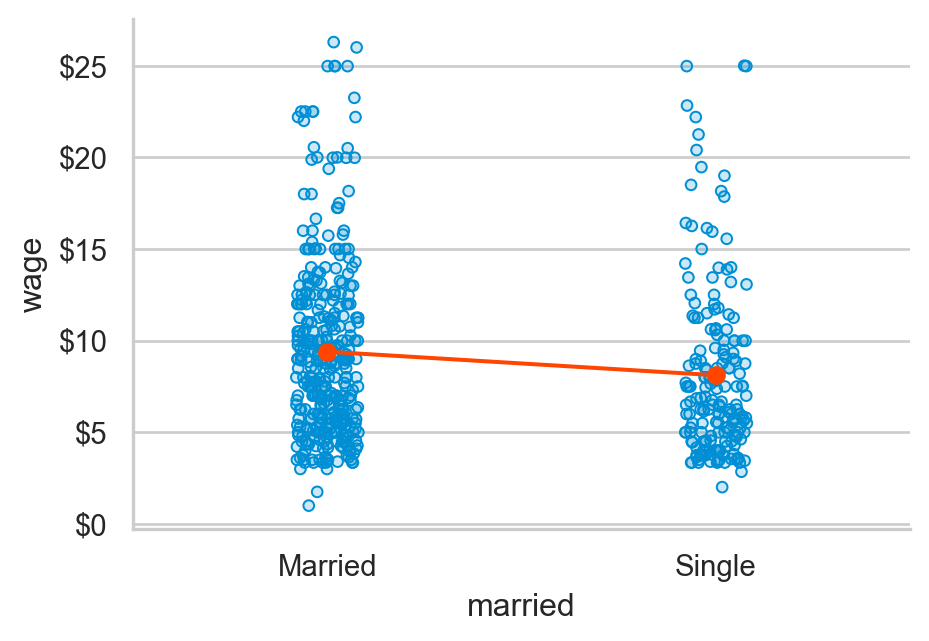
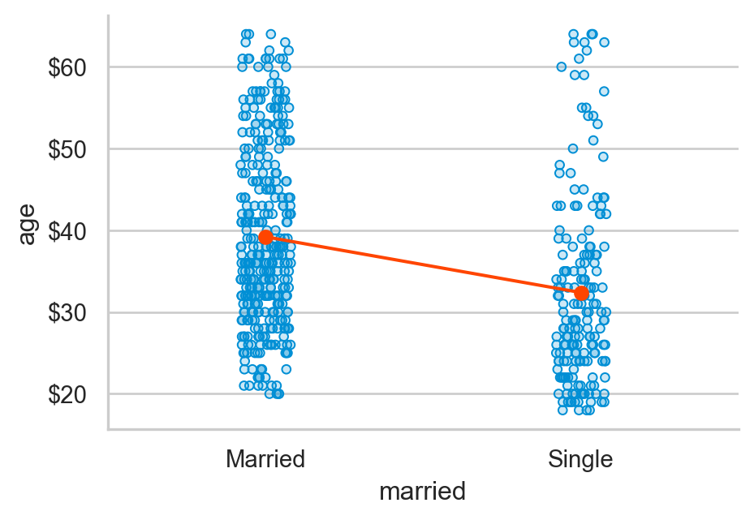
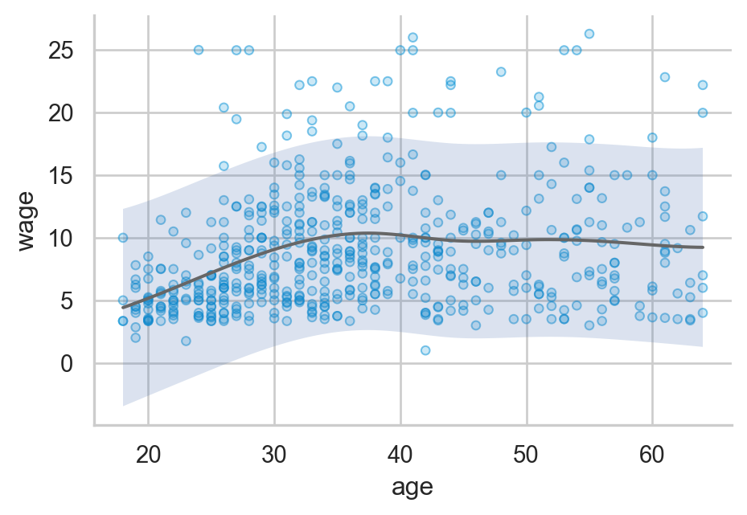
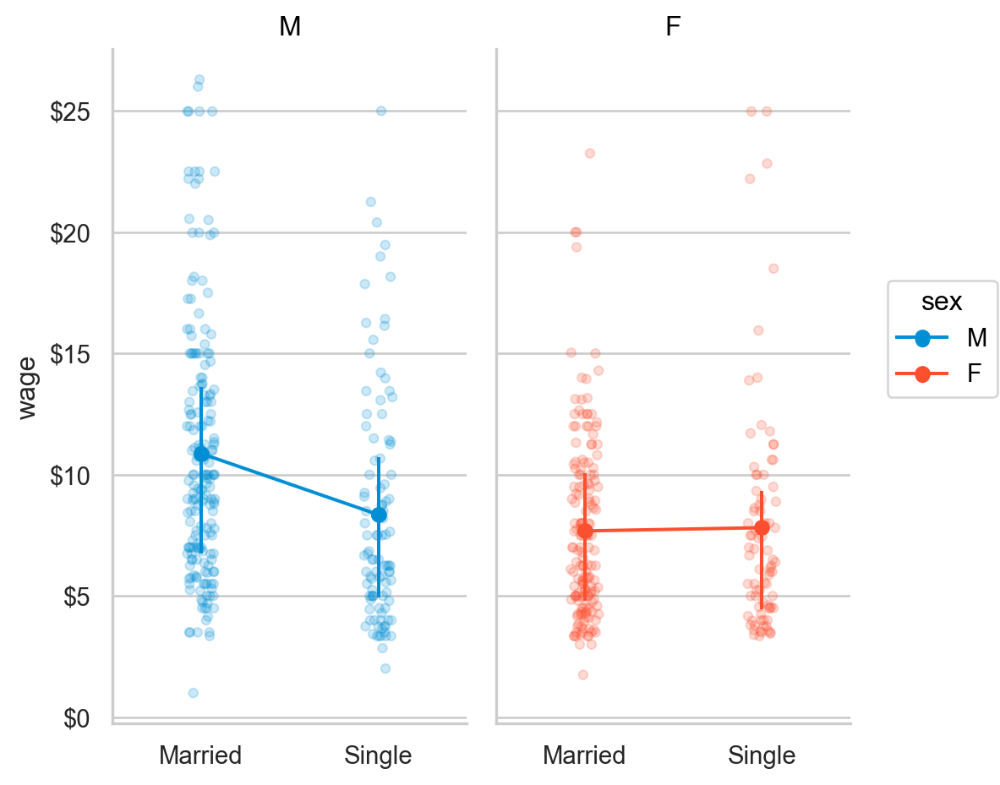
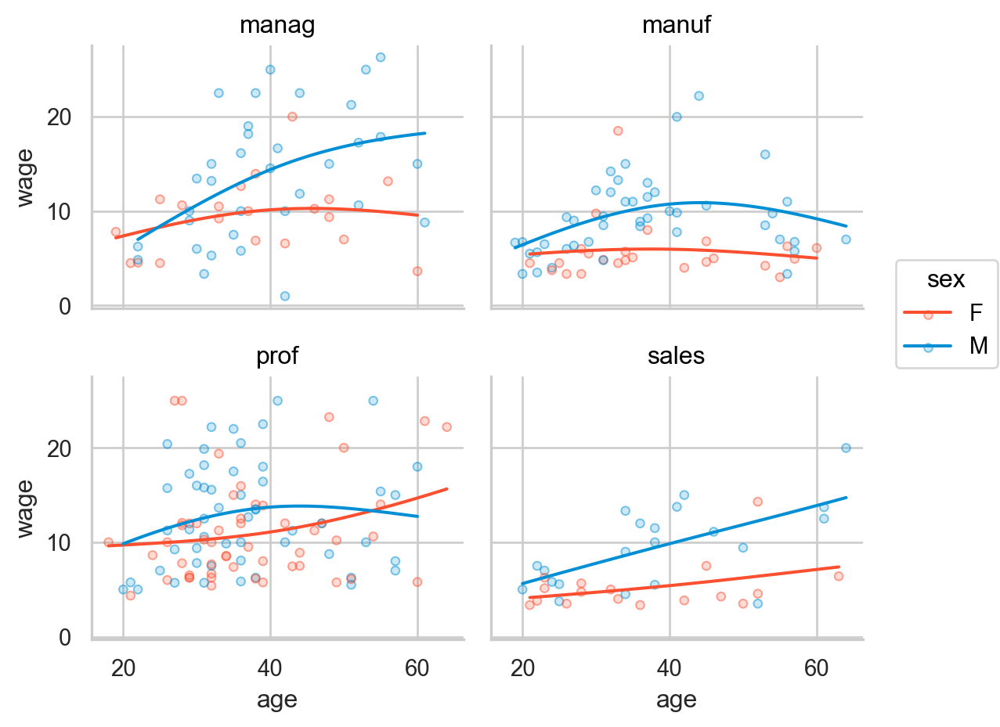

acad0 = pd.read_csv("data/c0301dt.csv")
acad0.head(5) time pubs salary
0 3 18 51876
1 6 3 54511
2 3 2 53425
3 8 17 61863
4 9 11 52926Mixed
통계 분석은 크게 세 가지 주제로 나눌 수 있음.
현대적 접근에서는 모호한 모집단에 대해 추론하기보다는 표본 내의 정보만으로 관계를 파악하고자 함.
이는 관계가 특정 표본에 너무 overfit되지 않도록 하여 (cross validation과 같은 방법을 이용), 다른 표본에서도 그 관계가 유지되도록 하기 위한 것이고, 전통적인 모집단에 대해 추론하는 것과 유사하다고 볼 수 있음.
예측변수가 한 개인 경우,
Linear relationships을 측정

Extented correlation: 예측치와 관측치의 pearson’s correlation

\(R\): Multiple correlation coefficient
\(R^2\): Coefficient of determination, 결정계수, 설명력
즉, \(\displaystyle\frac{V(\widehat{Y})}{V(Y)}\) 또는 \(\displaystyle 1 - \frac{V(e)}{V(Y)}\)


예측변수가 2개 이상인 경우:
변수들 간의 진실한 관계를 분석
미혼자에 대한 임금 차별이 있는가? 차별이 의미하는 바는 무엇인가?
아래 첫번째 그림과 같이 기혼자의 임금이 미혼자에 보다 높은 것으로 나타났다면,
이는 정말 결혼하지 않은 것이 임금을 책정하는데 영향을 주었는가?
하지만, 당연하게도 기혼자는 미혼자에 비해 연령이 높으며 (두번째 그림),
높은 연령은 연차가 높거나 실무능력이 뛰어난 경향으로 인해 임금을 높을 수 있다는 것을 감안하면 (세번째 그림)
차별처럼 보이는 차이는 차별이라고 볼 수 없을 수도 있음.
다시 말하면, 연령을 고려한 후에도 기혼자의 임금은 미혼자보다 높은가?
여전히 높다면, 연령을 고려한 후 혹은 연령을 조정한 후(adjusted for age)의 차이는 얼마라고 봐야하는가?
연령을 고려한 임금 차이를 조사하는 방법은 무엇이 있겠는가?
Data from the 1985 Current Population Survey



연령을 고려한 마라톤 기록?
70세 노인의 기록 2시간 30분과 20세 청년의 2시간 30분은 마라톤 실력이라는 관점에서 다르게 볼 수도 있음
예를 들어, “나이 차이가 큰 두 사람의 기록을 비교하는 것은 공평하지 않아”라는 주장에 대해서, 70세 노인의 기록은 “나이를 감안하면 2시간 10분에 해당한다”고 답변할 수 있음
다시 말하면, 나이와는 무관한/독립적인 마라톤 능력에 대해 말할 수 있음
이는 동일한 나이의 사람들로만 제한해서 마라톤 기록을 비교하는 것이 공평한 능력의 비교라고 말하는 것과 것이 같은 이치임

Source: https://doi.org/10.1186/2052-1847-6-31
기혼여부에 따른 임금의 차이가 남녀별로 다른가?
연령이 올라감에 따라 임금이 올라가는 패턴에 차이가 있는가?


왼편 그림에서 보면, 기혼여부에 따른 임금의 차이가 남녀에 따라 다르게 나타나는 것으로 보임
이러한 현상을 변수 간에 상호작용(interaction)이 있다고 말함 (moderate라는 표현도 있음)
말하지면, 기혼여부가 임금에 주는 효과가 성별에 따라 바뀌고, 기혼여부와 성별이 상호작용하여 임금에 영향을 준다라고 표현할 수 있음 (2-way interaction)
비슷하게, 오른편을 보면, 연령에 따른 임금의 증가 패턴이 남녀에 따라서, 업종에 따라 다르게 나타나는 것으로 보임
(manag: management, manuf: manufacturing, prof: professional)
즉, 연령이 임금에 미치는 효과는 성별과 업종에 따라 바뀌고, 연령, 성별, 업종이 상호작용하여 임금에 영향을 준다라고 표현할 수 있음 (3-way interaction)
위의 표현은 모두 효과를 가정한 표현으로 설명을 위해 편의상 그렇게 표현하였음
또한, 다른 요소들은 단순화를 위해 생략했음. 예를 들어 왼편의 상황에서 나이를 고려하면 다른 양상을 보일 수 있음
예측 모형 vs. 인과 모형
Source: Cohen, J., Cohen, P., West, S. G., & Aiken, L. S. (2003). Applied multiple regression/correlation analysis for the behavioral sciences (3rd ed.)
교수의 연봉(salary)이 학위를 받은 후 지난 시간(time since Ph.D.)과 출판물의 수(pubs)에 의해 어떻게 영향을 받는가?

Data: c0301dt.csv
acad0 = pd.read_csv("data/c0301dt.csv")
acad0.head(5) time pubs salary
0 3 18 51876
1 6 3 54511
2 3 2 53425
3 8 17 61863
4 9 11 52926import statsmodels.formula.api as smf
mod1 = smf.ols("salary ~ time", data=acad0).fit()
mod2 = smf.ols("salary ~ pubs", data=acad0).fit()
mod3 = smf.ols("salary ~ time + pubs", data=acad0).fit()Intercept 43658.59
time 1224.39
dtype: float64Intercept 46357.45
pubs 335.53
dtype: float64Intercept 43082.39
time 982.87
pubs 121.80
dtype: float64세 모형을 비교하면,
Model 1: \(\widehat{salary} = \$1,224\:time + \$43,659\)
Model 2 : \(\widehat{salary} = \$336\:pubs + \$46,357\)
Model 3: \(\widehat{salary} = \$983\:time + \$122\:pubs + \$43,082\)
time)의 효과는 $1,224에서 $984로 낮아졌고,pubs)의 효과는 $336에서 $122로 낮아졌음.

각 회귀계수를 partial regression coefficient (부분 회귀 계수) 라고 부름.
부분 회귀 계수의 첫번째 해석:
이는 다른 변수를 고려 (통제, controlling for) 했을 때 혹은 다른 변수의 효과를 제거 (partial out) 했을 때, 각 변수의 고유한 효과를 의미함; holding constant, controlling for, partialing out, adjusted for, residualizing
뒤집어 말하면, 연차만 고려했을때 연차가 1년 늘면 $1,224 연봉이 증가하는 효과는 연차가 늘 때 함께 늘어나는 논문 수의 효과가 함께 섞여 나온 효과라고 말할 수 있음.
이는 인과관계에 있는 변수들의 진정한 효과를 찾는 것이 얼마나 어려운지를 보여줌
부분 회귀 계수에 대한 두번째 해석

만약, 다음과 같은 인과모형을 세운다면,

만약, 연차의 효과 $1224이 논문수를 고려했을 때 줄어든($983) 수준을 훨씬 넘어 통계적으로 유의하지 않을 정도로 0에 가까워진다면, 연차의 효과는 모두 논문의 효과를 거쳐 나타나는 것이라고 말할 수 있음. 이 때, 완전 매개 (fully mediate)한다고 표현함.

이들는 인과관계의 기제/메커니즘의 일부를 설명해 줌.
반대로, 만약 다음과 같이 논문의 효과가 거의 사라진다면, 논문의 효과는 가짜 효과, spurious effect라고 표현함. 이는 논문과 연봉 간의 관계가 보이는 이유는 연차라는 common cause가 연결하고 있기 때문임. 이를 confounding이라고 함.